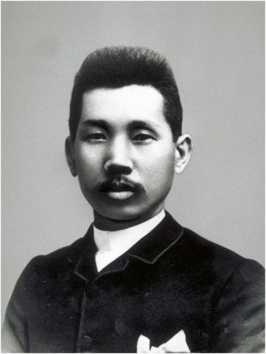

片山潜 1933年8月
刘国瑞 译自《前卫》一九五三年第八期
来源：湖北师范学院学报 一九八六年第三期
所谓“日本的米骚动”，堪称日本革命史上的光辉篇章之一。无庸置疑，这是在人民革命的目标下一直英勇战斗着的日本工人的一次革命行动。而日本工人阶级在米骚动中是付出了惨重牺牲的。 正是这日本无产阶级的第一次群众性的斗争，极大地震撼了日本的统治阶级。 一九一八年八月三日从富山县开始至同年九月十七日终结的这次骚动，席卷了包括三十六个府县在内的全国三分之二的地区，卷入的群众达一千万人，其中工人占百分之九十以上。在骚动波及到的一百四十四座城市中，工人与武力镇压暴动群众的军警之间发生了大量的流血冲突。当局的疯狂镇压，使日本无产阶级蒙受了深重的灾难，仅被捕入狱者就有七千八百一十三人。如果注意到这些事实，米骚动的意义是不难明瞭的。更何况，倏地蜂起的矿工和其他工人的罢工、怠工等等斗争，不仅支援了米骚动，而且伴随这些斗争，又导致工人和政府军队发生了冲突，被捕和负伤者不可胜数。 日本天皇制政府禁止刊登任何有关米骚动的消息。继而对小资产阶级实行了一些无关宏旨的改革，对揭竿而起的工人群众则肆意为虐，大搞白色恐怖。 几年前撰写这篇文章的时候，我曾经查阅了有关这个问题的大部分资料，包括司法当局和调查机关的出版物。 关于一九一八年米骚动的评价历来众说纷纭，但这些骚动具有革命性质，在十月社会主义革命的直接影响下勃然兴起，则是毫无疑义的。 尽管如此，一度也有人企图把“日本米骚动不是革命斗争”的观点带到日本共产党内部来。据说其根据是，“当时的日本社会主义团体没有参加这次运动”。 共产国际第六次代表人会驳斥了这种低估无产阶级革命行动的机会主义观点，并在其纲领中确认，日本米搔动是十月社会主义革命直接影响下发生的一系列的革命事件之一。 上述关于一九一八年米骚动的性质及其重要性的看法，最初遭到当代工人阶级的无耻叛徒和凶恶敌人佐野学（加东）、高桥贞树（大村）之流的猖狂攻击。共产国际抵制了当代叛徒们向共产主义队伍悄悄贩卖的有关日本革命运功历史发展的这些滥调。这是有助于我们判定日本革命的原功力，并在马克思列宁主义的基础上决定战略战术的。 日本资产阶级指望日本共产党会轻易地放过佐野及其一伙的叛卖行径，并希望看到革命工人内部滋长悲观失望的情绪，这当然是我们不能容忍的。 无论是政治方面或理论方面，日本共产党的影响在工人、农民以及一部分革命知识分子中正在不断增长，承认日本共产党正确的劳动群众也越来越多。日本资产阶级对共产主义者采取白色恐怖政策不是偶然的，这无疑是共产党所领导的日本革命运动的强大及其活力的一个标志。我谨以这篇短文献给十五年前直至今天都是革命运动基本力量的日本无产阶级。

西水桥，位于日本富山县北部，是一个濒临西伯利亚海岸的小镇。镇上居民以驾船打渔为生。为了捕鱼，他们出海远行，北上到达桦太（库页岛）海岸。这些渔民或许在西伯利亚海岸听到了布尔什维克革命的风声，而一些运载武器航行到敦贺和符拉迪沃斯托克（海参崴）的船员们回到家乡后，也多少向乡亲们透露了俄国革命的消息。 那年夏末，渔业丰收。渔民们由于鱼价跌落，迟迟未归。但是，米价一天天上涨，渔妇们在吃光仅有的一点储粮之后，依赖临时的微薄收入无法养家活口。眼见忍饥挨俄的一家老小，她们惶惶不安，陷入了绝望的深遇。 八月三日，当暮色笼罩大地的时候，城镇里响起了一片不同寻常的声音。下工后，渔妇们没有回家，三五成群地聚集在街头，另有二、三百名妇女聚集在海边。他们分成三队，向城里进发。一队来到镇长家，要求停止向外装运大米，因为大米外运已经引起米价上涨，继续外运就势必造成城镇储粮不足的情况更为严重。另外两支队伍包围了米店，要求店主向当地居民廉价出售大米，“不然的话，就放火烧掉你们的家产。”店方叫来了警察，双方发生严重冲突，不少妇女负伤。夜半，妇女们在粮仓留下了警备队，渐次散去。 八月四日晨，骚动的消息传到毗邻东水桥，群情激愤，整个城镇沸腾了起来。傍晚，约八百名携儿带女的妇女们从城镇涌向海边。他们分成几队，又向镇上蜂拥而去。警吏严阵以待，但是并没有阻挡住这些娘子军。 次日凌晨，镇公会电令东水桥向政府谷仓所在地神户运送大米。顷刻间，渔妇会议（她们建立的委员会，姑以名之）在镇寺院内成立了本部。渔妇会议向城镇和附近的所有战略地点派遣了警备队，监视粮食商人的动静。 接着，运动扩展到人口近千数的邻镇一一滑川。在这里，抗争也是从妇女中间引起的。但是，八月六日夜，领导权则转移到男人们的手中。当晚八时左右，近两千名居民聚集在富商、投机商嘉纳的门前。正值与其代理人交涉之际，镇警察队赶到了现场。由于夜深或疲乏不堪，群众开始散去，至十二时左右便沓无人迹了。 次日，全镇比较平静，镇当局开了一整天会。第三天正午，一艘货轮驶入滑川，停靠在米商会的岸边，打算装运一千斤大米。 俄而，警报长鸣，鼓声、钟声响成一片。妇女们奔向街头，拥入码头，阻止往船上装载大米。公司拿出五拜日元贿路妇女，但是遭到她们的断然拒绝。 在赤穗、律山、三次等地都发生了同样的搔动事件。
京都是日本的古城、座落在群山环抱的鸭川两岸。这里寺院林立，风景如画。作为“法和秩序”的堡垒，作为游手好闲的贵族的老巢，京都可说是那些年年来自全国各地的养尊处优者悠游岁月的场所。 八月十五日傍晚，就在这个反动城堡里发出了反抗的呼声，起义檄文象烽火一样，势如闪电地传播开来，遍及贫民区的各个角落。八百多名男女拿着竹矛和棍棒，喊着“到米仓去”的口号，顷刻间汇合了起来。在一个主动带头的男人的指挥下，气势汹汹的群众来到投机商的谷仓前面。 群众砸开门户，闯入家中，把隐藏在角落里的老板拽了出来，迫使他答应降低米价。然后，以次向下一家米店前进。夜半时分，这伙群众扩大成几支队伍，走遍了全市的米店，逐户限定他们降低米价。这期间，警方实行全市戒严，并派出二百名巡警包围了现场。尽管警察当局竭力控制这次自发的群众运动，但骚动仍急避地向全市扩展。据报道，警察署长驱车巡视市区，在街头港尾呼吁市民维持秩序，并在各处张贴布告，声称以一升米二角一分的价钱，向市民配售进口大米一万袋。但是，运动仍呈扩大之势。愤怒的群众攻击市当局与投机商狼狈为奸。薄暮时分，当动荡不安的城市暮色苍茫、市民的公愤达到极点的时候，步兵第三十八团的一队士兵开赴到现场。 在军队的驱赶下，群众向其他地区集中。在三支群众队伍中，有一支二百多人的队伍举着竹竿、麻袋作为旗帜，出现在市区南郊。旗手是一个十八岁的青年，后来被捕入狱。近千名群众加入了这两百多人的示威行列。骚动者一面袭击米店和公共建筑物，一面横卧街头，阻止电车行驶。司机们拒绝朝着人群开车。与此同时，许多地段的电线和电话线被切断，全市一片漆黑。群众通宵抢劫米店。在西阵地区（绢工业中心地），骚动是午后三时开始的。警察从汽车上袭击骚动者，逮捕了约三十余人，成功地平息了事态。八月十三日，全市渐趋稳定，起义终于被平息。
拥有近一百万人口的大阪，在日本的大城市中居第二位，是当时国内首屈一指的工商业中心。 大阪暴动是反对当局的殊死战斗是日本工人运动史上规模空前的一次斗争。 八月十一日午后七时，在天王寺公园召开了大阪市民大会，讨论了解决米价暴涨和大米短缺的对策。几位代表发表演说之后，大会起草了告市民书，并通过了一些决议。值大会结束之际，一个面色黝黑、蓄着胡子的男子跳上讲坛演讲。一名巡长推开群众，上前阻止演讲者。三千名群众因此愤怒地叫喊了起来：“讲呀！讲呀！”一会儿，十几名演讲者登上了讲坛，向群众发表了演说。当公园发生这种情况的时候，在入口处聚集了一大批未能入场的群众。这些群众骚动不安，警察竭力驱散他们，人群中发出了嘘嘘的抗议声。突然，从公园的树林中跑出来一百多名警察，把群众包围了起来。但是，群众突破了封锁线，朝着今宫贫民窟进发，并在铁路线附近的空地上召开了新的集会。 不久，三千名男男女女从一条狭小而加肮脏的街道里象潮水般地涌了出来。由于警察的主力集中在天王寺公园，群众便成片地捣毁了这一带的米店。在其他地区也发生了类似的情况，骚动者在所到之处都迫使米店半价出售了大米。 当夜，政府逮捕了包括四十名妇女在内的二百四十一名暴动涉嫌者。而被暴动群众捣毁的米店亦达二百五十家。八月十二日，惊愧失措的府知事、市长、大阪商会会长，继警察总动员之后，开会讨论了对策，并提出了一个迥非寻常的议案，即由富裕市民提供一百万日元基金，以使在五十天内，按一升三十分的价格，同市民配售大米二千石。在他们看来，五十天后新米上市，市价下跌，就可以避免事态的扩大。 傍晚，一批工人居多数的群众聚集在天满桥。他们从那里向天满桥停车场前进，据说停车场有几辆等待装船的满载大米的货车。暴民在途中捣毁了派出所，并在大江桥附近突破了封锁线。约有三万群众聚集在下之町，使交通为之断绝。事态已发展到不可收拾的地步，束手无策的当局于午后十一时不得不调动军队。随着军队的出动，和平示威终于发展成激烈的暴动。午前一时，一支五百人的叛民队伍与步兵、巡警在市之町发生了激烈的冲突。 后来，一队骑马的宪兵用武力驱散了群众。天满桥派出所由于一队步兵在最后一瞬间赶到现场，才免遭破坏。是夜，一共逮捕了五百四十二人。 次日，局势稳定，但那是一种暴风雨之前的宁静。傍晚，大阪驻军全部处于战备状态。这种极端的措施，引起了群众的极大愤慨。 傍晚，七千多名群众包围了暴发户铃木的住宅。人们向铃木的住宅以及守卫的军警投掷石头，一大队步兵赶来，以期扭转这种局势。 战斗正酣之际，咆哮不已的群众在市内其他地区纵火焚烧米店。顿时，火势蔓延到隔壁的两所房子，整个城区燃起了熊熊的烈火。次日午后九时，约两万暴民汇集在西久条，一队步兵和警察乘卡车前来，群众砸坏了卡车。直至深夜，群众仍不断地捣毁茶馆，曲艺场以及市内其他的娱乐场所。从第二天起，抢掠米店的暴民开始捣毁炭铺。在位于日本桥的燃料库前面，有一个大学生慷慨激昂地向群众演说，并成功地说服了仓库的主人贱价卖掉他仅有的木炭。但诚如所料，羚察赶到现场逮捕了这名学生，而这就成为捣毁燃料仓库的信号。 这期间，除了业已出动的军队之外，当局决定派遣一个骑兵团和一个工兵营，甚至决定动用野战炮。傍晚，当局发布了禁止街头集会的命令，八时左右又发布了一道临时禁止电车通行的命令，以期达到阻挠民众发动的目的。
名古屋位于日本腹地，是国内的工业中心，号称中京。在名古屋，事件的发展经过是： 八月十九日上午九时，一万五千名劳动群众（工人占多数）从市内公园出发游行。长长的游行队伍充斥在大津町宽阔的马路上，并延伸到市内的七个地区。在途中，游行者向商店的陈列窗投掷石头。与此同时，一支五千人的工人队伍包围了米商事务所密集的地段，另一支近三千人数的第三队塞满了大街小巷。这两支队伍在天须公园附近的红灯地区捣毁了一些民宅和派出所之后，与米谷交易所那边的一大群人会合。在棍江桥，警察和骑兵设置了两道封锁线，企图阻止他们前进。双方发生冲突，群众撵走了警察，骑兵纵马闯入群众队伍，恣意践踏群众。但是，群众毫无畏惧地向前冲。少数军队抵挡不住群众的冲击，当局立即派两队步兵前去支援。其时，米谷交易所变成了临时医院，室内地板几为死伤群众所遮盖。
神户，在日本五大海港中居第二位，是个繁华殷盛的城市。 神户起义具有明显的革命性质。八月十二日傍晚，群众聚集在凑川公园。有十二、三个演讲者在那里演讲，并向群众喊道：“小米店没有责任，必须干掉的不是他们，是铃木！”这个呼声引起了强烈的反响，浩浩荡荡的群众队伍朝着铃木商店下属的近代建筑物前进。警察的阻止无济于事，群众包围了建筑物，并投掷石头和瓦片。至午后九时，聚集在这里的群众竟达二万人以上。胆战心惊的警察们不知所措，呆若木鸡。这时，几个群众带头人率领几千人前往隔着几个行政区的铃木寓所。他们闯入其家，砸坏家俱，放火烧了起来。 然后，他们返回已占领的铃木商场，与群众一道闯入商场，洒上石油，点上火，刹那间神户屈指可数的建筑物铃木商店燃起了熊熊大火。火势向整个行政区蔓延，烧毁了包括《神户先驱报》报社、邮政局在内的三十座建筑物。当局出动了消防队，但是群众切断了橡皮管，并用枪、剑和手枪击退了消防队员，使他们无计可施。每逢一座建筑物噼啪作响燃烧起来的时候，群众便哄堂大笑。至十二时左右，整个行政区变成了一片焦土。不久，又分成几伙人，分别捣毁了人们憎恨的工厂主、高利贷者和房主的住宅，并烧掉了铃木商店的制钢所，烧掉了群众恨之入骨的残酷剥削房客的建筑公司兵神馆事务所以及贫民窟房主桥间的豪华公寓。 另外一支群众队伍一面攻打沿路所有的米店，一面前往米谷交易所。凡反抗者一概予以捣毁，在兵库就捣毁了一家精米加工所。 在暴动过程中，暴民小集团遍及各个角落，吓得资产阶级魂飞魄散，惊恐万分。然而，暴动并非局限于街头。那天早晨，三菱造船所机械部所雇佣的五百名工人（共雇佣工人六百名）在举行简短集会后，实行怠工，并用铁锤、棍棒砸坏了车间和造船所事务所。因此，厂方请求当局派遗一队海军担任巡查和保卫任务。 事后，公司当事人委派总技师会见工人，调查骚动的原囚。工人明确表示，这是对不足以维持最低生活水平的低工资的抗议。而许多拖家带口的工人们的确是连干饭也吃不上，只能以粥、饼充饥的。 八月十三日拂晓，当局派出了第二十九团的一个营、傍晚又出动了另一个营。事务所、工厂、仓库、店铺纷纷关门闭户。傍晚，神户路断人稀，一片阴郁的景象，宛如被占领的城市一样。 当天傍晚，三万名群众聚集在凑川公园。一部分群众米到市政厅，正值骚扰之际，有一部分人一面喊叫“烧掉妓馆”，一面走向神户游廊福原。由于遭到强大的步兵部队的阻挠，他们便朝着市内商业区走去。他们沿途向富商们的住宅投掷石头，并砸毁了三家有名的餐馆。与此同时，砸坏了市政厅的一部分群众在武装暴民的诱导下，身着白上衣，决心去作拼死的斗争。途中，一队步兵突然开枪，不少人负伤。士兵切断了退路，于是群众回头奔向荣町。在那儿，己有一部分群众聚集在市内最大的商店汤浅商会门前。群众与全副武装的军警发生了流血冲突。顷刻，尸横遍地，血流成河。暴民溃退，但在取得支援后，他们重振队伍，终于在次日凌晨占领了汤浅商会。 八月十三日夜，军警与群众之间的流血冲突一直没有间断。派出所、米仓和酒库纷纷被捣毁。拂晓时暴民逐渐减少，但形势仍然险恶，军警不得不终日在全市巡逻。
随着富山县、神户、大阪等地米骚动消息的广泛传播，一股反抗浪潮席卷了整个日本。饥饿使愤愤不平的群众奋起反抗，警察的无能早已暴露无遗，这使当局不得不动员其海军和陆军，以挽救一度貌似强大的反动政权岌岌可危的局势。我们无需详细叙述一切地方的起义，因为所有的起义原因是相同的，性质也是一样的，不同之处无非是规模的大小、表现的形式而已。 这次由富山县渔妇们发动的饥饿暴动，几天之内席卷了日本大大小小的城市和农村。就工矿中心地而言，这个运动则逐步采取了具有激烈色彩的罢工形式。 八月十七日傍晚，在福冈蜂地煤矿首先点燃了罢工斗争的烽火，当然，也可以把这次罢工称作是一次起义。煤矿工人要求提高工资，矿主建议廉价出售大米，以代替提高工资的要求。但是，矿工们明白这种让步纯粹是一种欺骗，因为与米骚动相关联，矿主支付给邻镇的米价早已相应地降低了。被这种阴谋诡计所激怒的矿工开始捣毁并焚烧矿山的建筑物和事务所。至当日傍晚，一共破坏了十三座建筑物。于是，军队出动，军队与工人发生了冲突，矿工死亡六人，受伤多人。 在山口县宇部煤矿，六千名矿工和其他工人企图破坏矿区。为了镇压暴动，当局出动了几支部队。双方的冲突一直持续到八月十九日午前四时。其间，十五名矿工被杀害，几百名矿工负伤。继之，几名罢工领导人亦被捕。为了营救他们，工人袭击了拘留所。结果再次发生冲突，当局被迫把罢工领导人转移到山口市刑务所。是日傍晚，一共逮捕了起义涉嫌者一千八百二十八人。 岩屋煤矿的暴动更为激烈。该矿位于佐贺县东松浦郡，属于煤炭大王贝岛所有。近七个月来，贝岛鉴于矿区工人对工资低下，物价昂贵极为不满，曾约许从十月一日起提高工资百分之三十。但是，矿工们于八月二十九日举行集会，提出了下列要求：提高工资百分之三十，食堂出售的物品降价，工人有权在其他商店购买商品等。矿主有意拖延，于是工人们开始破坏矿山建筑物，进而用炸药爆破矿主住宅和矿井，并切断电信、电话线。矿主逃匿，工人抓获了副矿主，把他作为人质关在戏园里，后为军队所救出。这次起义迅速扩展到其他许多地方煤矿。 在相知，一万九千名矿工捣毁了矿井、仓库、事务所以及其他建筑物。 九月二日，起义中心转移到福冈。在军队的镇压下，起义期间有十四名工人被杀害，二十四名工人受了重伤。本县最大的三井财团的三池煤矿，有一万五千人参加了这次运动。一万五千名矿工与军队对垒作战，但旋即被迫撤退。矿山起义与城市起义在性质上有所不同。从矿工的斗争中，我们不难看出深受奴役和剥削的矿工们对矿主充满了复仇的热望。 矿山发生的事件，其严重程度较之城市有过之而无不及。工人们在矿里可以自由领取并任意地使用炸药。当军队出动时，他们经常逃进矿山，成功地避开了军队的追击。无庸讳言，玫府通常也诉诸残酷手段，命令军队毫不留情地捕杀工人。 煤矿地区起义所具有的深刻性质显然是基于这样一种事实：一方面物价腾贵使矿工比其他工人更为痛苦，另一方面工作性质使矿工与世隔离，完全落入了贪得无厌的矿主们的手中。 起义从矿山扩展到一些工厂。在神户，全市许多其他企业的工人加入了造船所工人起义的行列。从整体看，罢工次数在当时是急邃上升的。 引人注目的是皇宫卫士、大阪刑务所和尼崎市从业人员的罢工。皇宫卫士的罢工给日本社会以全面的冲击，这就更其令人震惊不已。因为国家用来维持皇室所支出的年金高达四百五十五万日元，其富裕程度在世界上是无与伦比的。宫庭可说是一个拥有很多产业的大资本家。在价值一亿五千万日元的十六种国库补助企业的股票中，皇室握有七十七万零七百四十七张；在二千七百五十五万英亩山林中，皇室占有的达三百三十万零二千英亩；此外，在北海道还占地几千英亩。所有这些估计约值四亿日元，而其他财产则值二十亿日元。因而一般都认为皇室有足够的金钱打发东京的仆役们，但皇室没有动用这宗款项也是众所周知的事实。于是，导致了仆役们罢工，要求提高工资。 这些事实充分说明了米骚动的规模：它确实席卷了日本全国各地，并使军事、警察、地主的天皇制完全陷入了惴惴不安的境地。 这场动摇了日本天皇制权力的运动，其参加者大多是工人。对于年轻的日本工人阶级说来，这是他们反对剥削者的第一次群众性的政治行动。如同其有限的要求范围和一些斗争方法所表明的那样，这次运动无疑显示了日本无产阶级政治上是不成熟的。尽管如此，这些斗争仍然给予日本无产阶级以不可或缺的经验，换言之，日本无产阶级从这些反对天皇制的具有决定意义的早期的英勇战斗中学到了许多东西。
我们就一九一八年日本米骚动所作的这篇简短的记述，明确地揭示了近代日本社会的阶级矛盾。 天皇制、大地主以及大企业是反动统治的支柱。战后的危机四伏，取代了日本资本主义的“黄金时代”。为了攫取更多的战利品，为了获得更大的压榨国内以及殖民地工人的机会，正在勾心斗角的统治者们在对付无产阶级和农民的进攻、对付城市小资产阶级的运动、对付知识分子不堪地主天皇制的高压统治而采取有限的反抗时，选择斗争手段似乎更加踌躇不定了。当政者的这种动摇.在无产阶级进行英勇斗争的最初的日子里暴露得更为清楚。为了分裂并镇压这次运动，政府不仅诉诸制订新法案，而且诉诸对小资产阶级采取无情的军事恐怖手段。 政府的政策产生了一定的效果，空洞的普选诺言终于笼络了城市的小资产阶级和一大批知识分子。但是，这事实本身并没有降低规模空前的反对资本主义剥削和政治压迫的米骚动的重要性。因为只有工人和农民才是这些米骚动的真正参加者。在这次事件的影响下，日本的无产阶级觉醒了，并开始意识到自身的力量及其强大。这次起义伴随着许多工厂工人的罢工，截至一九一九年，这类罢工几乎波及到所有的产业部门，呈现出一派蓬勃发展之势。政府对工人的无情镇压，特别是对七千名在押暴动者所作出的令人发指的残酷裁决，有力地促进了日本工人阶级意识的觉醒。虽说骚动的参加者最终一律被判处了长期徒刑，但这种判决的残酷性毕竟在劳动群众中间引起了极大的愤慨。 政府为了压制进步工人运动作出了一切努力，但工人运动在一九一九年仍然稳健而急剧地发展了起来。起义后最初的八个月中，各产业部门一共发生了约五百次罢工斗争。罢工者的主要要求是，提高工资、缩短劳动时间，改善劳动条件等。在上述罢工斗争中，就有要求实行八小时工作制和发给休息日（在日本，例假不发给工资）工资的事例，而许多工厂实际上己经实施了八小时工作制。 从一九一九年八月起，工人开始采取了前所未所的斗争方法，即所谓的怠工斗争。众所周知，在神户川崎造船厂（日本最大的造船厂之一，拥有一万六千名职工、八百名工段长和五百名技师）首次成功地举行了这种罢工。一九一九年九月十八日，当厂方拒绝工人提高工资的要求之后，工人断然实行罢工。他们象平时一样来到车间，开动了机器，但什么活也不干。工人们这样坚持了十天，至九月二十九日又决定继续怠工。这期间，从工人中选举产生的委员会与公司当事人进行了交涉。就在这个过程中，厂` 内其它部门的工人亦宣布同情怠工。但是，公司仍然拒绝让步。直到技师和工段长出面，才接受了两个部门工人的要求，随后又接受了船厂主要罢工者的要求，即按照八小时工作制支付了工人罢工期间的工资。 从前，只是到了紧要关头才悄悄采用怠工手段，如今却在造船厂所有的部门公然运用这种斗争方法了。这期间，工人们秩序井然，并预先决定拿出一天工资作为罢工基金。 可见，在日本现时的条件下，怠工是一种行之有效的武器。对于没有特殊基金的工人来说，正式罢工是必须慎之又慎的。据治安警察法第七条的规定，罢工者随时有被捕的危险。这不仅破坏了工人的团结，而且由于密探盛行，连集会也受到限制。更何况，日本的工会组织极不发达，工人实际上没有组织起来，这种状况无疑加深了罢工的困难。尽管不少罢工困难重重，但是在没有工会组织的情况下仍然发动了起来。不过，怠工可以避免警察的干涉，可以排除被捕的危险，而且由于全体工人上班，也便于工人们采取统一行动。 神户造船厂怠工的成功，促使全国各地开始采用这种斗争方法。怠工形态的罢工，使工人团结起来，并提高了他们的阶级意识。一九一九年，全国建立了许多工会组织，并取得了合法存在的权利。警察当局历来把工会作为非法组织加以取缔，米骚动之后，则不得不容许工会的存在。应当说，在今天已无法摒弃这样的政策，而且一些劳资纠纷也由警察居间调停而得到了解决。 可见，正是米骚动与相继发生的罢工，才迫使政府在事实上承认了工会。 这时日本工人运动的特征是，具有阶级意识的女工，如同男工一样，积极投入了斗争行列。米骚动后的第二年，女工组织拥有三千名会员。日本代表出席华盛顿国际工人会议前夕，女工们在深川举行了集会。饶有兴味的是，一个抱着孩子的妇女在这次集会上作了讲演。这位纯朴的无知无识的女性，以其朴实无华，饱含激情的语言，描绘了工人阶级成年累月劳苦困顿的景象。她那血泪般的控诉，给听众留下了深刻的印象。 自此，工人开始积极参加政治活动。在以往，工人们被剥夺了这种权利。八月骚动后，无论是工人团体的集会或报纸上，对此都展开了广泛的讨论，而普选运动也蓬蓬勃勃地发展了起来。 日本无产阶级就这样一面为争取政治的和经济的权利而斗争，一面阔步前进了。可以预料，他们与全世界的工人阶级行将携手前进。为建设一种新制度而斗争。在这种新制度下，工人不仅能够获得解放，能够发挥其聪明才智，而且能够获得真正的人的生活权利。 毫无疑问，米骚动给了日本工人运动以强有力的刺激，并把它置于广阔的革命轨道之上了。 米骚动和巨大的罢工浪潮的经验告诉我们，无产阶级的自发群众运动是不能克敌制胜的。革命的关键在于组织起来，这是日本无产阶级从这次斗争中所得到的教训。 此后不久，日本无产阶级最优秀的代表们建立了日本共产党。工人、农民、以及日本殖民地被压迫的人民，渴望自由，开始团结在这面旗帜之下。 自米骚动以来，十五年过去了，日本共产党也走过了十几年的征程。这是日本无产阶级为清除组织中的机会主义遗产、反对日本帝国主义而英勇斗争的年代。这个斗争可说是在列宁的旗帜下，在共产国际的直接指导下进行的。 决战还在前头。日本的现状给日本共产党提出了责无旁贷的历史任务，即“为反对帝国主义战争、反对军事警察的天皇制，为争取粮食、土地和自由的人民革命，为建立工农政府”而斗争。 应当说，日本无产阶级及其先锋队日本共产党所取得的斗争经验以及过去十年间党的布尔什维克化的斗争，正是即将来临的日本革命的胜利保证。
感谢 飞鸣镝 录入及校对